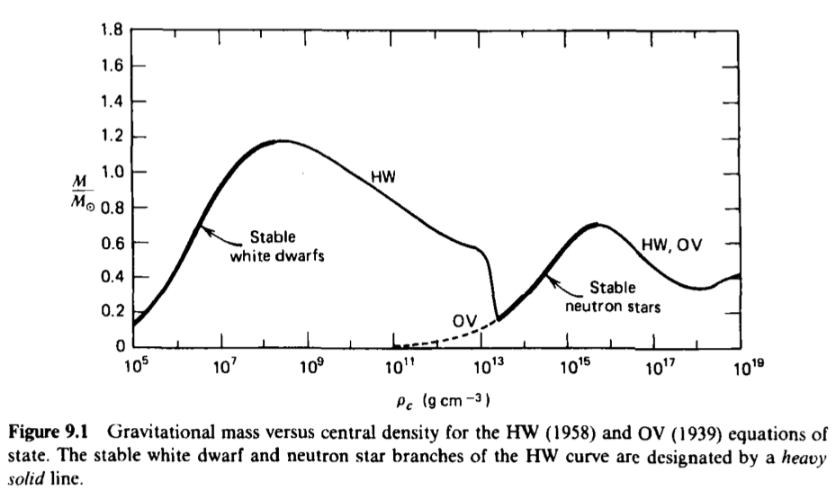
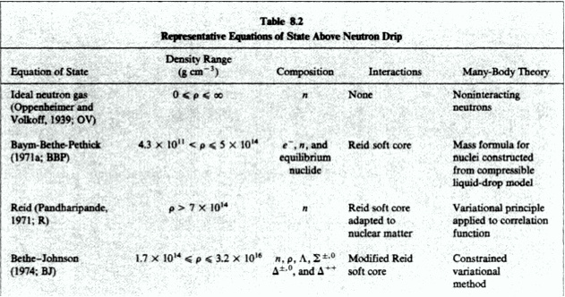
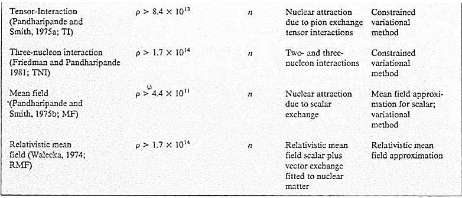
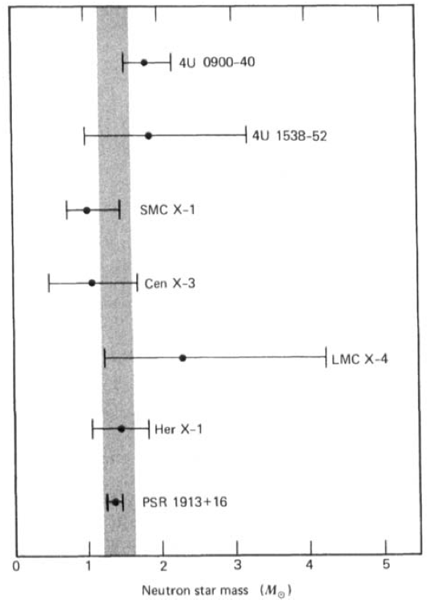
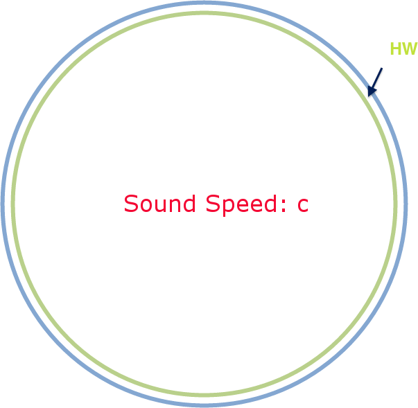

Compact objects => GR
3 equations from GR
\begin{equation}G_{ab}=8\pi T_{ab}\end{equation}
Line element of a static spherical object, \begin{equation} ds^2 = - e^{-2\Phi} dt^2 + e^{2\lambda} dr^2 + r^2 d\Omega^2 \end{equation} in which $d\Omega^2 := d\theta^2 + \sin^2\theta d\phi^2$.
In the perfect fluid model, $T_{ab}$ \begin{equation}T_{ab} = (\rho + P)U_a U_b + P g_{ab}\end{equation}
\begin{align} \frac{d m(r)}{dr} & = 4\pi \rho(r) r^2 \\ \frac{d\Phi(r)}{dr} & = - \frac{m(r)+4\pi P(r) r^3}{r\left( r-2m(r) \right)} \\ \frac{dP(r)}{dr} & = -(\rho + P(r)) \frac{m(r) + 4\pi P(r) r^3}{r\left( r-2 m(r) \right)} \label{eq:OVEqn} \end{align}
Four variables
Fourth eq n: EoS
Initial conditions

$M_m = 0.7 M_{\odot}$, $\rho_c=5\times 10^{15}\mathrm{g\cdot cm^{-3}}$, $R=9.6\mathrm{km}$
Non-interacting neutrons, protons, and electrons.
Results:
$M_m = 0.72 M_\odot$, $\rho_c = 5.8\times 10^{15}\mathrm{g\cdot cm^{-3}}$, $R = 8.8\mathrm{km}$;
$M_{\text{min}} \approx 0.03 M_\odot$, $\rho_c \approx 7.8\times 10^{11} \mathrm{g\cdot cm^{-3}}$, $R = 48 \mathrm{km}$
( Why miminum? )
$M_{\text{min}} \approx 0.18 M_\odot$, $\rho_c=2.6\times 10^{13}\mathrm{g\cdot cm^{-3}}$, $R=300\mathrm{km}$
The existence of maximum mass allows us to rule out models with only the knowledge of mass of observed neutron stars.


"Neutron stars: A taste of pasta?" Nature Physics 9, 396–397 (2013)
\begin{equation} v_1 = \omega a_1 \sin i \label{variationBinary} \end{equation}
We can measure $P = 2\pi/\omega$ and $v_1$.
\begin{align} \frac{G(M_1+M_2)}{a^3} & = \omega^2 \\ a_1+a_2 & = a \\ M_1 a_1 - M_2 a_2 & = 0 \end{align}
Move observable quantities to the right.
\begin{align} f_1(M_1,M_1+M_2, i) & := \frac{M_2^3 \sin^3i}{(M_1+M_2)^2} \nonumber\\ &= v_1^3/G\omega \end{align}
mass function
\begin{equation} M_X = \frac{f_X q(1+q)^2}{\sin^3i}, \qquad q := \frac{M_X}{M_O} = \left(\frac{f_O}{f_X}\right)^{1/3} \end{equation}
The companion of PSR 1913+16 has not been directly observed.
Solve out mass.

All neutron stars mass should be $M_{\text{Cha}}$ in advanced stellar evolution theory.
Shaded region: $ 1.2 \lt M/M_\odot \lt 1.6$
Upper limit of all neutron stars.

\begin{align} \frac{d\rho}{dn}& = \frac{\rho+P/c^2}{n}\\ M & = \frac{4}{3}\pi \rho R^3 \\ A & = 2\pi n\left( \frac{3}{8\pi\rho} \right)^{3/2} (\chi - \sin\chi\cos\chi) \\ \sin\chi & = \left( \frac{8\pi \rho}{3} \right)^{1/2} R \\ \left| \frac{\partial M}{\partial \chi} \right|_A & = 0 \qquad \text{Equilibrium} \end{align}
5 equations
$\rho$, $P$, $n$, $R$, $A$, $\chi$
We can find $P/\rho$ as a function of $\chi$.
\begin{equation}\frac{P}{\rho} = \xi(\chi), \qquad \xi(\chi) = \frac{6\cos\chi}{9\cos\chi - \frac{2\sin^3\chi}{ \chi-\sin\chi\cos\chi } }-1\end{equation}
\begin{align} & \left\vert \frac{\partial^2 M}{\partial\chi^2} \right\vert_A \gt 0 \\ \Rightarrow & \Gamma \gt \Gamma_c(\chi) \end{align} with \begin{align} \Gamma & := \frac{\partial \ln P}{\partial \ln n} = \left( 1+\frac{\rho}{P} \right)\frac{dP}{d\rho} \\ \Gamma_c(\chi) & = (\xi+1)\left( 1+ \frac{3\xi+1}{2}\left( \frac{\xi+1}{6\xi}\tan^2\chi -1 \right) \right) \end{align}
\begin{equation} \xi\leq 0.364 \Rightarrow \chi\leq 1.12 \Rightarrow \frac{M}{R} \leq 0.405 \end{equation}
Maximum mass when $\Gamma=\Gamma_c(\chi_c)$: \begin{equation} \frac{\xi_c+1}{\xi_c}v^2 = \Gamma_c \end{equation}
\begin{equation}\rho_c\geq \frac{\rho_0-P_0/v^2}{1-(\xi_c+1)/\Gamma_c}\end{equation}
\begin{equation}M\leq \frac{1}{2} \sqrt{\frac{3}{8\pi}} \sqrt{ \frac{1-(\xi_c+1)/\Gamma_c}{\rho_0-P_0/v^2} } \sin^3\chi_c \end{equation}
Use BBP EoS to find largest allowed value of $\rho_0-P_0/v^2$.
($\rho_0 = 5\times 10^{14}\mathrm{g\cdot cm^{-3}}$)
Then set $v=1$.
\begin{equation}M_{\text{max}} \approx 3.6 M_\odot\end{equation}
\begin{align} P & = \frac{m_ic^2}{\lambda_i^3}\phi_i(x) \\ \rho_0 & = \sum_i n_i m_i \end{align}
\begin{align*}\lambda_i & =\hbar/(m_i c) \\ x & := p_F/(m_i c) \\ \phi_i(x) & := \frac{g}{6\pi^2}\int_0^x\frac{x^4 dx}{(1+x)^{1/2}} \end{align*}
\begin{align} n_i & = \frac{g}{h^3} \int_0^{p_F} 4\pi p^2 dp \nonumber \\ & = \frac{4g\pi}{3h^2} p_F^2 \nonumber \\ & = \frac{1}{3\pi^2\lambda_i} \end{align}
Baryons are much heavier than electrons so the energy density is almost dominated by baryons.
{kind=link}